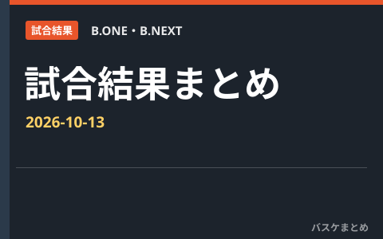

2026-10-13 B.ONE・B.NEXT 試合結果まとめ

B.ONE・B.NEXTの当日結果を1記事にまとめます。日付は日本時間、対象は2026-27レギュラーシーズンです。
B.ONE
| 対戦 | スコア | 記録状態 |
|---|---|---|
| 東京U vs 立川 | 80－71 | 確定 |
B.NEXT
この日の試合はありません。
出典：B.LEAGUE公式
B.ONE 公式日程・結果（取得 2026-10-13 23:07 JST）
B.NEXT 公式日程・結果（取得 2026-10-13 23:07 JST）
公式試合詳細（取得 2026-10-13 23:07 JST）
公式記録・発表は訂正される場合があります。出場は保証されません。最新情報は公式サイトをご確認ください。